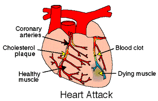

Cholesterol and The Heart
What is cholesterol?
Cholesterol is a fatty substance (a lipid) that is an important part of the outer lining (membrane) of cells in the body of animals. Cholesterol is also found in the blood circulation of humans. The cholesterol in a person's blood originates from two major sources, dietary intake and liver production. Dietary cholesterol comes mainly from meat, poultry, fish, and dairy products. Organ meats, such as liver, are especially high in cholesterol content, while foods of plant origin contain no cholesterol. After a meal, cholesterol is absorbed by the intestines into the blood circulation and is then packaged inside a protein coat. This cholesterol-protein coat complex is called a chylomicron.
The liver is capable of removing cholesterol from the blood circulation as well as manufacturing cholesterol and secreting cholesterol into the blood circulation. After a meal, the liver removes chylomicrons from the blood circulation. In between meals, the liver manufactures and secretes cholesterol back into the blood circulation.
What is LDL and HDL cholesterol?
Cholesterol, like oil, cannot dissolve in the blood unless it is combined with special proteins called lipoproteins. (Without combining with lipoproteins, cholesterol in the blood will turn into a solid substance.) The cholesterol that is secreted by the liver into the blood is combined either with very low-density lipoproteins (VLDL) or high-density lipoproteins (HDL). VLDL cholesterol is then metabolized in the bloodstream to produce LDL cholesterol. The cholesterol combined with low-density lipoprotein is called LDL cholesterol, and the cholesterol combined with high-density lipoproteins is called HDL cholesterol.
How does cholesterol cause heart disease?

LDL cholesterol is called "bad" cholesterol, because elevated LDL cholesterol is associated with an increased risk of coronary heart disease. LDL lipoprotein deposits cholesterol on the artery walls, causing the formation of a hard, thick substance called cholesterol plaque. Over time, cholesterol plaque causes thickening of the artery walls and narrowing of the arteries, a process called atherosclerosis. Arteries that supply blood and oxygen to the heart muscles are called coronary arteries. When coronary arteries are narrowed by atherosclerosis, they are incapable of supplying enough blood and oxygen to the heart muscle during exertion. Lack of oxygen (ischemia) to the heart muscle causes chest pain, also formation of a blood clot in the artery can clause complete blockage of the artery, leading to death of heart muscle (heart attack). Atherosclerotic disease of coronary arteries (coronary heart disease) is the most common cause of death in the United States, accounting for about 600,000 deaths annually.
HDL is called the "good cholesterol" because HDL cholesterol particles prevent atherosclerosis by extracting cholesterol from the artery walls and disposing of them through the liver. Thus, high levels of LDL cholesterol and low levels of HDL cholesterol (high LDL/HDL ratios) are risk factors for atherosclerosis, while low levels of LDL cholesterol and high level of HDL cholesterol (low LDL/HDL ratios) are desirable.
What determines the level of LDL cholesterol in the blood?
The liver not only manufactures and secretes LDL cholesterol into the blood, it also removes LDL cholesterol from the blood. To remove LDL cholesterol from the blood, the liver relies on special proteins called LDL receptors that are normally present on the surface of liver cells. LDL receptors snatch LDL cholesterol particles from the blood and transport them inside the liver. A high number of active LDL receptors on the liver surfaces is associated with the rapid removal of LDL cholesterol from the blood and low blood LDL cholesterol levels. A deficiency of LDL receptors is associated with high LDL cholesterol blood levels.
Both heredity and diet have a significant influence on a patient's LDL, HDL and total cholesterol levels. For example, familial hypercholesterolemia (FH) is a common inherited disorder whose victims have a diminished number or nonexistent LDL receptors on the surface of liver cells. The resultant decreased activity of the LDL receptors limits the liver's ability to remove LDL cholesterol from blood. Thus, affected family members have abnormally high LDL cholesterol levels in the blood. They also tend to develop atherosclerosis and heart attacks during early adulthood.
Diets that are high in saturated fats and cholesterol decrease the LDL receptor activity in the liver, thereby raising the levels of LDL cholesterol in the blood. Fats are classified as saturated or unsaturated according to their chemical structure. Saturated fats are derived primarily from meat and dairy products and can raise blood cholesterol levels. Some vegetable oils made from coconut, palm, and cocoa are also high in saturated fats. On the other hand, most other vegetable oils are high in unsaturated fats. Unlike saturated fats, unsaturated fats do not raise blood cholesterol and can sometimes lower cholesterol. Olive and canola oil are high in monounsaturated fats, which may have a protective effect against coronary heart disease. Unfortunately, some vegetable oils are converted to saturated fats during a process called "hydrogenation" which can be required for food processing.
Does lowering LDL cholesterol prevent atherosclerosis and heart attacks?
In the past 10 years, clinical trials have conclusively demonstrated that lowering LDL cholesterol reduces heart attacks and saves lives. The benefits of lowering LDL cholesterol include:
- Reducing the formation of new cholesterol plaques;
- Eliminating existing plaques;
- Preventing rupture of existing plaques;
- Decreasing the risk of heart attacks; and
- Lowering the chance of strokes.
How low should LDL cholesterol be?
The National Cholesterol Education Program (NCEP) has issued LDL cholesterol treatment guidelines for adults. The NCEP target levels are different for people who have varying risks for heart attacks. For example, since individuals who have already suffered a heart attack have a greater chance of experiencing another heart attack than individuals without known coronary heart disease, their LDL cholesterol levels need to be more aggressively lowered than people without known coronary heart diseases.
The NCEP guidelines prior to May 2001 call for:
- Lowering LDL cholesterol levels to 100 or less in patients with known coronary artery disease (those who have already had a heart attack or have undergone coronary artery angioplasty or bypass surgery);
- Reducing LDL cholesterol to 130 or less in those without known coronary artery disease but have 2 or more risk factors (such as diabetes mellitus, high blood pressure, current cigarette smoking, low HDL levels, or a family history of early heart attacks) for coronary atherosclerosis;
- Lowering LDL cholesterol to 160 or less in those with no known coronary artery disease and fewer than 2 risk factors; and
- Selecting a medication that also increases HDL cholesterol levels for patients with low HDL cholesterol levels who also need a medication to lower elevated LDL cholesterol.
In May 2001 the NCEP (National Cholesterol Education Program) issued a new set of guidelines for treatment of high blood cholesterol in adults. Please read the Management of High Blood Cholesterol in Adults, The Third Report Of The National Cholesterol Education Program (NCEP).
Whether the NCEP LDL cholesterol treatment target levels are low enough is controversial. An increasing number of experts in treating blood lipid disorders believe that aggressively lowering LDL cholesterol below 80 further decreases atherosclerosis and heart attack rates. In order to achieve these levels, diet and exercise are insufficient and moderate to high doses of a statin drug also will be necessary on a long-term basis. However, the safety of moderate to high doses of statins over several decades is unknown. Thus, the decision to aggressively reduce the patient's LDL cholesterol level below the levels recommended by NCEP should be individualized after consultation with a doctor familiar with the treatment of lipid disorders. Factors that must be taken into account in making treatment decisions include the patient's age, family history of early coronary heart diseases, other risk factors, and cholesterol profile.
How can LDL cholesterol levels be lowered?
In order to lower LDL cholesterol, the activity level of the LDL receptors must be increased. LDL receptor activities can be increased by diets that are low in cholesterol and saturated fats and by medications.
Lowering LDL cholesterol involves losing excess weight, exercising regularly, and following a diet that is low in saturated fat and cholesterol. Medications are prescribed when diet and exercise cannot reduce the LDL cholesterol to acceptable levels. The most effective and widely used medications to lower LDL cholesterol are called statins. Other medications used in lowering LDL cholesterol and in altering cholesterol profiles include nicotinic acid (niacin), fibrates such as gemfibrozil (Lopid), and resins such as cholestyramine (Questran).
Is lowering LDL cholesterol enough?
Unfortunately, the prevention and treatment of atherosclerosis are more complicated than just lowering LDL cholesterol levels. LDL cholesterol reduction is only half of the battle against atherosclerosis. Individuals who have normal or only mildly elevated LDL cholesterol levels can still develop atherosclerosis and heart attacks even in the absence of other risk factors such as cigarette smoking, high blood pressure, and diabetes mellitus. Additionally, successfully lowering elevated LDL cholesterol levels cannot always prevent atherosclerosis and heart attacks. In many clinical trials to lower LDL cholesterol, there were patients who adhered to their assigned diets, faithfully took their cholesterol-lowering medications, successfully lowered their LDL cholesterol to target levels, yet still suffered progressive atherosclerosis and heart attacks. It is clear that while lowering LDL cholesterol below NCEP target levels is an important step, there are other factors involved.
What are the other risk factors for heart attacks?
The other risk factors include:
- Abnormally low HDL cholesterol levels.
- The size of the LDL cholesterol particles in the blood may be too small. Scientists have found that the size of LDL cholesterol particles in the blood is predominantly genetically inherited. People who have small and dense LDL cholesterol particles have a higher risk of developing atherosclerosis and heart attacks than those who have larger and more buoyant particles.
- Elevated Lp(a) cholesterol levels. The level of Lp(a) cholesterol is also predominantly genetically inherited. Individuals with elevated levels of Lp(a) cholesterol have a higher rate of atherosclerosis and risk of heart attacks.
- Elevated homocysteine levels.
What are LDL cholesterol particle size patterns A and B?
The LDL patterns A and B refer to the size of LDL cholesterol particles in the blood. Some doctors believe that small LDL cholesterol particles in the blood may pose a greater risk for developing atherosclerosis and heart attacks than the absolute level of LDL cholesterol in the blood. The size of LDL cholesterol particles is primarily inherited. A special blood test called polyacrylamide gradient gel electrophoresis can measure particle size and determine whether a person has blood cholesterol LDL pattern A or LDL pattern B.
Persons with LDL cholesterol pattern A have large, buoyant LDL cholesterol particles. Individuals with pattern A are more likely to have normal blood levels of LDL cholesterol, HDL cholesterol, and triglycerides. Pattern A is usually not associated with an increased likelihood of atherosclerosis.
Persons with LDL cholesterol pattern B have predominantly small and dense LDL cholesterol particles. Pattern B is frequently associated with low HDL cholesterol levels, elevated triglyceride levels, and the tendency to develop high blood sugar levels and type II diabetes mellitus. Individuals with pattern B are also more likely to develop high blood triglyceride levels after a fatty meal (postprandial hyperlipidemia). Pattern B is associated with accelerated atherosclerosis and a 3 to 5- fold increase in heart attack risk. Pattern B is believed to be the most important cause of atherosclerosis in people with normal or near normal total and LDL cholesterol levels.
Some scientists believe that the smaller LDL particles are more dangerous than the larger ones because they can more easily squeeze through the tiny gaps between the cells in the endothelium to reach inside the artery walls. The endothelium is a thin layer of cells which covers the inner wall of the arteries. The cells making up the endothelium have tiny gaps between them. Others postulate that the smaller LDL cholesterol particles are more easily oxidized. Oxidation of cholesterol is significant in the formation of cholesterol plaques.
How can LDL cholesterol size be enlarged?
Even though LDL cholesterol particle size is mainly genetically inherited, individuals who have small LDL particles (pattern B) can increase their particle size through diet, exercise, and medications.
Diets that are low in saturated fat and cholesterol, regular aerobic exercise, and loss of excess body fat have been determined to decrease the number of small LDL particles and increase the number of large LDL particles in the blood. In other words, lifestyle modifications can change pattern B to pattern A.
When lifestyle changes alone are unsuccessful, medications can be used. Even though the statin medications (discussed below) are effective in lowering the absolute levels of LDL cholesterol, they appear to have a limited effect on LDL cholesterol size pattern. Medications such as nicotinic acid (niacin) and gemfibrozil (Lopid) have been found effective in many instances in increasing the size of LDL cholesterol particles.
Why is HDL the good cholesterol?
HDL is the good cholesterol because it protects the arteries from the atherosclerosis process. HDL cholesterol extracts cholesterol particles from the artery walls and transports them to the liver to be disposed through the bile. It also interferes with the accumulation of cholesterol in the artery walls by the LDL cholesterol particles.
The risk of atherosclerosis and heart attacks in both men and women is strongly related to HDL cholesterol levels. Low levels of HDL cholesterol are linked to a higher risk, whereas high HDL cholesterol levels are associated with a lower risk.
Very low and very high HDL cholesterol levels can run in families. Families with low HDL cholesterol levels have a higher incidence of heart attacks than the general population, while families with high HDL cholesterol levels tend to live longer with a lower frequency of heart attacks.
Like LDL cholesterol, life style factors and other conditions influence HDL cholesterol levels. HDL cholesterol levels are lower in persons who smoke cigarettes, eat a lot of sweets, are overweight and inactive, and in patients with type II diabetes mellitus.
HDL cholesterol is higher in people who are lean, exercise regularly, and do not smoke cigarettes. Estrogen increases a person's HDL cholesterol, which explains why women generally have higher HDL levels than men do.
For individuals with low HDL cholesterol levels, a high total or LDL cholesterol blood level further increases the incidence of atherosclerosis and heart attacks. Therefore, the combination of high levels of total and LDL cholesterol with low levels of HDL cholesterol is undesirable whereas the combination of low levels of total and LDL cholesterol and high levels of HDL cholesterol is favorable.
What are LDL/HDL and total/HDL ratios?
The total cholesterol to HDL cholesterol ratio (total/HDL) is a number that is helpful in predicting atherosclerosis. The number is obtained by dividing total cholesterol by HDL cholesterol. (High ratios indicate higher risks of heart attacks, low ratios indicate lower risk).
High total cholesterol and low HDL cholesterol increases the ratio, and is undesirable. Conversely, high HDL cholesterol and low total cholesterol lowers the ratio, and is desirable. An average ratio would be about 4.5. Ideally we want to be better than average if we can. Thus the best ratio would be 2 or 3 or less than 4.
Another ratio is LDL/HDL. The LDL/HDL ratio is actually a more pure ratio than total cholesterol/HDL. Because LDL is a measure of bad cholesterol and HDL is a measure of good cholesterol, whereas the total cholesterol is the sum of HDL, LDL, and the VLDL. Yes, adding up the HDL, LDL and VLDL makes up the total cholesterol measurement.
Even though total cholesterol/HDL ratio is not as accurate or pure as the LDL/HDL ratio, the former is more commonly obtained because the total cholesterol is easier and cheaper to obtain than the LDL cholesterol level.
What are the treatment guidelines for low HDL cholesterol?
In clinical trials involving lowering LDL cholesterol, scientists also studied the effect of HDL cholesterol on atherosclerosis and heart attack rates. They found that even small increases in HDL cholesterol could reduce the frequency of heart attacks. For each 1 mg/dl increase in HDL cholesterol there is a 2 to 4% reduction in the risk of coronary heart disease. Although there are no formal guidelines, proposed treatment goals for patients with low HDL cholesterol are:
- To increase HDL cholesterol to higher than 35 mg/dl in men and 45 mg/dl in women with a family history of coronary heart disease; and
- To increase HDL cholesterol to approach 45 mg/dl in men and 55 mg/dl in women with known coronary heart disease (such as patients who have already suffered a heart attack).
How can levels of HDL cholesterol be raised?
The first step in increasing HDL cholesterol levels (and decreasing LDL/HDL ratios) is life style modification. When life style modifications are insufficient, medications are used. In prescribing medications or medication combinations, doctors have to take into account medication side effects as well as presence or absence of other abnormalities in cholesterol profiles.
Regular aerobic exercise, loss of excess weight (fat), and cessation of cigarette smoking cigarettes will increase HDL cholesterol levels. Regular alcohol consumption (such as one drink a day) will also raise HDL cholesterol. However, there are different subclasses of HDL cholesterol which have varying degrees of effectiveness in preventing atherosclerosis. Alcohol is believed to increase the level of the less important subtype of HDL cholesterol. Because of other adverse health consequences of excessive alcohol consumption, alcohol is not recommended as a standard treatment for low HDL cholesterol.
Medications that are effective in increasing HDL cholesterol include nicotinic acid (niacin), gemfibrozil (Lopid), estrogen, and to a lesser extent, the statin drugs (discussed below).
What is lipoprotein (a), Lp(a) cholesterol?
Lipoprotein (a), Lp(a), is a LDL cholesterol particle that is attached to a special protein called apo(a). In large part, a person's level of Lp(a) in the blood is genetically inherited. Elevated levels of Lp(a) (higher than 20 mg/dl to 30 mg/dl) in the blood are linked to a greater likelihood of atherosclerosis and heart attacks in both men and women. The risk is even more significant if the Lp(a) cholesterol elevation is accompanied by high LDL/HDL ratios.
Certain diseases are associated with elevated Lp(a) levels. Patients on chronic kidney dialysis and those with nephrotic syndromes (kidney diseases that cause leakage of blood proteins into the urine) tend to have high levels of Lp(a).
There are many theories as to how Lp(a) causes atherosclerosis although exactly how Lp(a) accumulates cholesterol plaques on the artery walls has not been well defined. Clinical trials that conclusively prove that lowering Lp(a) reduces atherosclerosis and the risk of heart attacks have not been conducted. Currently, there is no international standard for determining Lp(a) cholesterol levels, and commercial sources of Lp(a) testing may not have the same accuracy as research laboratories. Therefore, specifically measuring and treating elevated Lp(a) cholesterol levels are not widely performed in this country.
How can Lp(a) cholesterol levels be reduced?
Most lipid-lowering medications such as statins, Lopid, and cholestyramine have a limited effect in lowering Lp(a) cholesterol levels. Estrogen has been shown to lower Lp(a) cholesterol levels by approximately 20% in women with elevated Lp(a) cholesterol. Estrogen can also increase HDL cholesterol levels when given to postmenopausal women. Additionally, nicotinic acid (Niacin or Niaspan) in high doses has been found to be effective in lowering Lp(a) cholesterol levels by approximately 30%.
What are triglycerides, chylomicrons, and VLDL?
Triglyceride is a fatty substance that is composed of three fatty acids each of which is attached to a glycerol molecule. Like cholesterol, triglyceride in the blood either comes from the diet or the liver. Also, like cholesterol, triglyceride cannot dissolve and circulate in the blood without combining with a lipoprotein. Thus, after a meal, the triglyceride and cholesterol that are absorbed into the intestines are packaged into round particles called chylomicrons before they are released into the blood circulation.
A chylomicron is a collection of cholesterol and triglyceride that is surrounded by a lipoprotein outer coat. (Chylomicrons contain 90% triglyceride and 10% cholesterol.) There are special enzymes on the blood vessels that break up the triglyceride inside the chylomicrons, releasing fatty acids in the process. The fatty acids can either be used by the muscles as energy, or absorbed by fat cells where they are incorporated again into triglyceride that can be stored in the fat cells for future energy needs. The chylomicrons are then removed from the circulation by the liver.
The liver not only removes triglyceride and chylomicrons from the blood, it also synthesizes and packages triglyceride into VLDL (very low-density lipoprotein) particles and releases them back into the blood circulation. Therefore, before breakfast after an overnight fast, most of the triglyceride in the blood comes from the liver in the form of VLDL particles. Like chylomicrons, VLDL particles contain mostly triglyceride. Some of the VLDL particles lose triglyceride in the blood and become cholesterol-rich LDL particles.
Do high triglyceride levels cause atherosclerosis?
Whether elevated triglyceride levels in the blood lead to atherosclerosis and heart attacks is controversial. While most doctors now believe that an abnormally high triglyceride level is a risk factor for atherosclerosis, it is difficult to conclusively prove that raised triglyceride by itself can cause atherosclerosis. However, it is increasingly recognized that elevated triglyceride is often associated with other conditions that increase the risk of atherosclerosis including obesity, low levels of HDL- cholesterol, insulin resistance and poorly controlled diabetes mellitus, and small, dense LDL cholesterol particles.
What are the causes of elevated triglyceride levels?
In some people, abnormally high triglyceride levels (hypertriglyceridemia) are inherited. Examples of inherited hypertriglyceridemia disorders include mixed hypertriglyceridemia, familial hypertriglyceridemia, and familial dysbetalipoproteinemia.
Hypertriglyceridemia can often be caused by non-genetic factors such as obesity, excessive alcohol intake, diabetes mellitus, kidney disease, and estrogen containing medications such as birth control pills.
How can elevated blood triglyceride levels be treated?
The first step in treating hypertriglyceridemia is a low fat diet with a limited amount of sweets, regular aerobic exercise, loss of excess weight, reduction of alcohol consumption, and stopping cigarette smoking. In patients with diabetes mellitus, meticulous control of elevated blood glucose is also important.
When medications are necessary, fibrates (such as Lopid), nicotinic acid, and statin medications can be used. Lopid not only decreases triglyceride levels but also increases HDL cholesterol levels and LDL cholesterol particle size. Nicotinic acid lowers triglyceride levels, increases HDL cholesterol levels and the size of LDL cholesterol particles, as well as lowers the levels of Lp (a) cholesterol. The statin drugs has been found effective in decreasing triglyceride as well as LDL cholesterol levels and, to a lesser extent, in elevating HDL cholesterol levels.
What are the statin drugs?
The statins are the most widely used medications today in lowering LDL cholesterol. Most of the clinical trials that showed heart attack reduction and improved longevity used one of the statins as the cholesterol lowering medication. Statins are well tolerated with low side effect rates when used long term. Statins not only lower blood LDL cholesterol levels, they also help increase HDL cholesterol levels. The statin medicines that are now on pharmacy shelves in the U.S. (putting the brand name first in capital letters followed by the generic name in parentheses) are:
- Lescol (fluvastatin sodium) made by Novartis
- Lipitor (atorvastatin calcium) made by Parke-Davis and Pfizer
- Mevacor (lovastatin) made by Merck
- Pravachol (pravastatin sodium) made by Bristol-Myers Squibb
- Zocor (simvastatin) made by Merck
The statins act by repressing or inhibiting an enzyme called HMG-CoA reductase. The role of this enzyme is the promotion of a chemical reaction early in the synthesis of cholesterol. By inhibiting HMG-CoA reductase, the statins hinder the production (synthesis) of cholesterol by the liver. Diminished synthesis of cholesterol in the liver in turn stimulates (increases) the activity of LDL receptors on the surface of liver cells. Increasing LDL receptor activity decreases LDL cholesterol levels in blood.
Studies have conclusively established that lowering LDL cholesterol with diet and statins reduces the risk of a second heart attack. The prevention of recurrent heart attacks in patients who have already suffered a heart attack is called secondary prevention.
Studies have also demonstrated that reducing LDL cholesterol with diet and statins reduces the risk of having the first heart attack. Prevention of heart attacks in those who have never had a heart attack is called primary prevention.
Studies have also confirmed that reducing LDL cholesterol benefits both men and women.
For more information regarding the side effects, precautions, and drug interactions of the various statins, please read the Statins article, and visit the Medications area.
What are the limitations of statins?
Statins are currently the most important class of medications in lowering LDL cholesterol, which is now the most important first step in preventing atherosclerosis and heart attacks. But statins are not the only answer. Other cholesterol-altering medications can also be important in the fight against atherosclerosis.
For example, in certain patients with familial hypercholesterolemia (FH), a statin alone may not be enough when LDL cholesterol levels are very high. A statin may need to be combined with another medication such as cholestyramine or nicotinic acid in order to lower the LDL cholesterol to acceptable levels.
Statins may also not be as effective as other medications in treating elevated Lp(a) cholesterol levels and in enlarging small LDL cholesterol particle sizes. For example, estrogen and niacin are more effective than statins in decreasing the blood Lp(a) cholesterol levels. Gemfibrozil and niacin are more effective than statins in raising blood HDL levels and in increasing the size of the LDL cholesterol particle. Diets rich in B vitamins or vitamin supplements, such as folic acid and vitamin B6, help lower blood homocysteine levels. Elevated homocysteine levels also aggravate atherosclerosis.
What is nicotinic acid?
Nicotinic acid (niacin) is a B vitamin. An average American diet contains 15-30 mg of niacin per day. However, in treating blood cholesterol and triglyceride disorders, high doses (1-3 grams a day) of nicotinic acid are necessary. Nicotinic acid increases HDL cholesterol, lowers LDL cholesterol, and improves the LDL/HDL ratio. Nicotinic acid also increases LDL cholesterol particle sizes while lowering Lp(a) cholesterol and triglyceride levels.
Nicotinic acid is most suited for individuals whose only problem is low HDL cholesterol. Nicotinic acid used alone can raise HDL cholesterol levels by 30% or more.
Nicotinic acid is not as effective as a statin in lowering LDL cholesterol levels. Therefore, when low HDL cholesterol is accompanied by high LDL cholesterol, most doctors use a statin to decrease the LDL cholesterol first. Statins can also modestly increase HDL cholesterol levels. If necessary, nicotinic acid can be added to a statin to further raise HDL cholesterol levels.
The most common side effect of nicotinic acid is a flushing sensation of the face and a general sense of itching, which occur about half an hour after taking the drug. Another side effect is upset stomach. These side effects can be partially alleviated by taking nicotinic acid with meals. Nicotinic acid comes in regular tablets or slow and sustained release capsules. The sustained release capsules release nicotinic acid from the stomach into the blood circulation more gradually than the regular tablets. Therefore, the sustained release capsules such as Niaspan produce a lower incidence of upset stomach and skin flushing than the niacin tablets.
Another side effect is irritation of the liver with an abnormal elevation of liver enzymes in the blood. This liver irritation is usually reversible upon discontinuing nicotinic acid. Other side effects of nicotinic acid include aggravating blood sugar levels in patients with diabetes mellitus and precipitating painful arthritis attacks in patients with gout.
What is gemfibrozil (Lopid)?
Gemfibrozil (Lopid) is a fibric acid derivative that has been reported to raise HDL levels by about 15%. Gemfibrozil can also lower triglyceride levels and increase the size of LDL cholesterol particle sizes. Therefore, gemfibrozil is best suited for patients with elevated triglyceride levels, LDL cholesterol pattern B, and low HDL cholesterol.
Gemfibrozil is not as effective as the statins in lowering LDL cholesterol and is insufficient for this purpose when used alone. Therefore, medication combinations may be necessary in treating patients with high LDL cholesterol levels who also have other lipid abnormalities. Doctors generally avoid combining a statin drug with gemfibrozil because of concern over the added risk of muscle inflammation (myositis).
The side effects of gemfibrozil include nausea, stomach upset, and sometimes diarrhea. Like the statins and nicotinic acid, it can also cause liver irritation. The liver irritation is usually mild and reversible, but it occasionally can be severe enough to require stopping the drug. Gemfibrozil can cause gallstones when used over several years. The drug can also intensify the effectiveness of blood thinners such as Coumadin when both medications are used together. Thus, the dose of Coumadin should be adjusted to avoid over-thinning of the blood, which can lead to excessive bleeding.
What is Cholestyramine (Questran)?
Cholestyramine (Questran) and colestipol (Colestid) are sand-like materials which bind bile salts in the intestine and allow fat and cholesterol to be eliminated in the stool. Cholestyramine is a resin that increases LDL receptor activity and lowers LDL cholesterol. Cholestyramine has been used effectively in combination with gemfibrozil to help lower LDL cholesterol levels. With these drugs, cholesterol can be reduced by 20%, but triglyceride levels may increase. These drugs can have the side effects of bloating, nausea, indigestion, and constipation. They also interfere with the absorption of many other drugs from the stomach and intestine.
Who should undergo standard lipid profile testing?
It is recommended that every adult over 20 should have lipid panel tests (total cholesterol, LDL cholesterol, HDL cholesterol, and triglyceride levels) every 5 years if LDL cholesterol is less than 130, and every 1-3 years if LDL cholesterol is borderline (between 130 and 160). This is particularly important for those with a family history of coronary artery disease. Once these cholesterol figures are known, the chance of developing heart disease can be determined in combination with the other risk factors that play a role in its development.
Who should undergo testing for LDL cholesterol particle size and Lp(a) cholesterol levels?
The scientific analysis for the determination of LDL size and Lp(a) is relatively new and is not standardized from laboratory to laboratory. Thus, results will vary to some degree between different laboratories. Also, because the use of any specific laboratory test is not widespread, the cost of testing remains expensive. (Lp(a) measurements cost approximately $100 and LDL size measurements about $200 - $300).
Because of the cost and the variability of testing, determination of these cholesterol components is not for everyone. Currently, persons who have been diagnosed with coronary artery disease whose risk factor profile would not otherwise predict coronary artery disease at the age at which it occurred, should be tested for these more specific cholesterol components. For example, if heart disease occurs at a young age without high LDL levels, high blood pressure, diabetes, or cigarette smoking, the physician and patient should then search for another risk factor such as small LDL size or elevated Lp(a).
Among persons without coronary heart disease, those with a family history of heart disease occurring early in life should be tested for these entities, which are predominantly determined by genetic inheritance. As the cost and accuracy of testing improves, the evaluation of these components should become more widespread.
Cholesterol and The Heart At A Glance
- Cholesterol is produced in the liver and carried in the bloodstream by lipoproteins.
- LDL cholesterol is associated with an increased risk of coronary artery disease.
- Coronary heart disease is the most common cause of death in the U.S.
- Risk factors for coronary heart disease have been identified.
- After 20 years of age, cholesterol level testing is recommended every 5 years.
- Treatment recommendations for elevated cholesterol are based on the levels of total cholesterol, LDL cholesterol, HDL cholesterol, and other risk factors for coronary heart disease.
- Diets high in cholesterol and saturated fats can increase blood cholesterol levels.
- Diets high in unsaturated fats can lower blood cholesterol.
- The most effective natural means of lowering blood cholesterol is to reduce dietary saturated fat intake.
- Treatment of elevated cholesterol includes diet, weight loss, regular exercise, and occasionally medications.